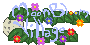

Les fleurs s'ouvrent…
0 %
Moon Bloom Village
🧪 Mode test
✕
📏 Mesures (docs/perf.md)
Bâtir la ferme d'essai
Mesurer 30 s
Mesurer Construire
Copier le rapport
Ressources
+20 bois, pierres, fibres, planches
+10 minerais et lingots
+5 de chaque bloc
Tous les outils
Construire l'Atelier
Objet
Qté
Ajouter
Le reste
+100 💰
+1 000 💰
+1 000 XP
Niveau suivant
Remplir les batteries
Remplir le réservoir
Appareil
Usure à 100 %
+10 de chaque graine
Faire mûrir les parcelles
Énergie à 0
Énergie pleine
+50 blés
+4 poules
+3 moutons
Laine prête
+2 vaches
+20 pailles
+20 de chaque aliment
Vieillir l'inventaire d'une nuit
Construire toutes les stations
+10 farines
+10 huiles
+20 œufs
User le moulin
Bâtiment
Zone de culture
Poulailler
Silo
Panneau solaire
Batterie
Pompe
Réservoir
Niveau 5
Débloquer tous les nœuds
+10 PT
Construire la Serre
Construire le Verger
Construire le Réfrigérateur
Vider les batteries
Valider le chapitre en cours
Chapitre
Aller au chapitre
Aller à 21 h 50
Passer 1 nuit
Passer 5 nuits
Simuler 60 nuits (joueur appliqué)
Graine
Changer de ferme (cette graine)
Brouillard : tout voir
Brouillard : tout cacher
L'état de la partie (JSON)